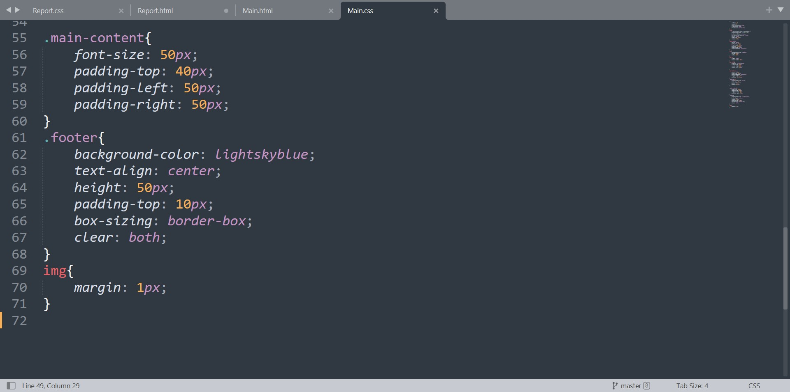
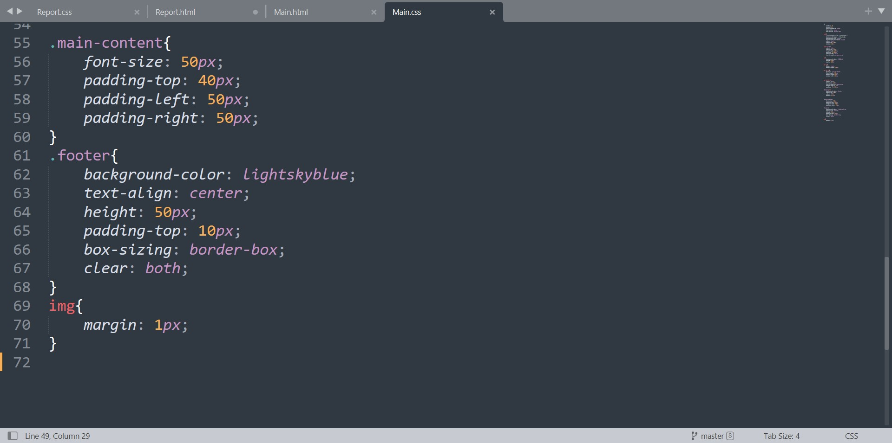
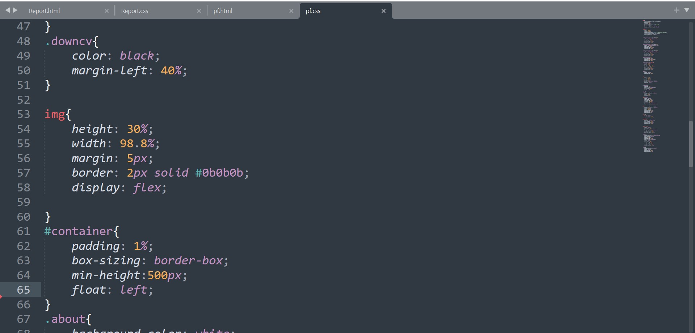
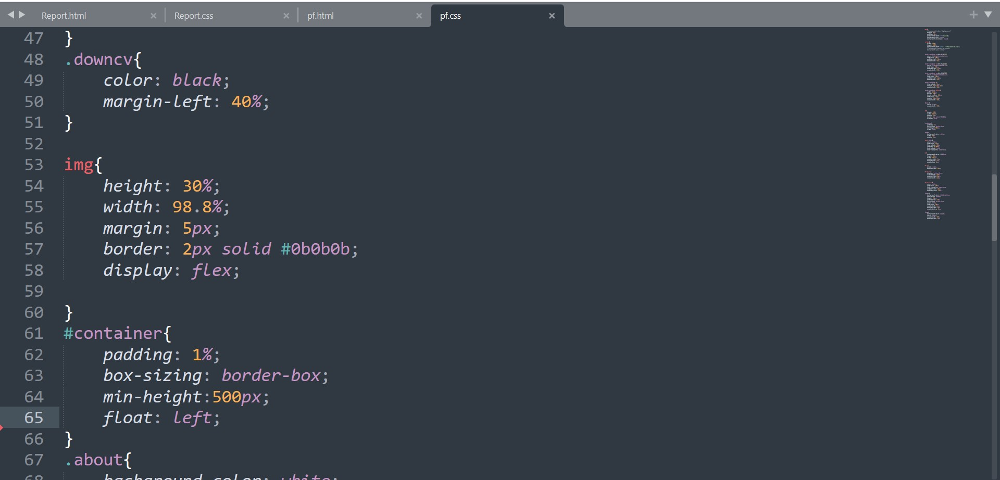

Report:
I first learned about web development when I was in seventh grade. I began by learning the fundamentals of HTML (Hyper Text Markup Language). I was able to create a simple webpage using html, paragraph, heading, marquee, and image tags with the assistance of my computer tutor. I created a simple webpage describing my school where I inserted a photo of my school, used a marquee tag to slide a image across the webpage, used a background color, gave text a different color, described a few paragraphs and gave it the title "My School."
Despite the fact that it was a simple webpage, it made me happy. As a result, I began to research website development. I was able to combine different webpages and create a website using HTML codes by the time I reached class ten.
I began learning more about web development when I joined my bachelor's degree. I began learning more about HTML and CSS (Cascading Style Sheet). I learned how to design a webpage using CSS by using tables, columns, rows, paragraphs, sections, images, buttons, icons, boxes, hyperlinks, and many other elements. I was very excited at first, but as I began coding in HTML and CSS, it became more complex and difficult for me.
I was bedridden for a month after contracting COVID-19 a few days before this project. As a result, I missed important updates, was unable to attend my online classes, was unable to communicate with my friends and teachers, and my life became more difficult. After about a month, I resumed working on it. To keep track of my project, I requested the assistance of my friends and watched numerous YouTube tutorials. I was on the verge of giving up because I was seeing so many new things and couldn't work around them. The codes I saw were complex, and the codes I implemented did not work properly.
It was becoming increasingly difficult for me. So I drew a rough layout for my website in a blank sheet of paper and began coding accordingly. I drew a template-like thing and wrote codes for it. I used HTML to write the code and CSS to design the elements. Because I was using so many new codes, debugging took a long time for me. I had to search through several sections to find the error. I had to go through some web tutorials to debug it at times. Bugs that I couldn't fix on my own, I enlisted the assistance of my module leader and a few of my friends.
Module experience:
Learning about web programming has been a fantastic experience. Mr. Ankit Thapa, the module leader, had always been helpful to me. We have a lot of discussions on our subject. Coding in CSS was difficult at first, but with the help of module leader, I was able to overcome several obstacles and am now able to design my HTML using CSS more easily than ever. I am confident that with my module leader's continued help, I will be able to produce great websites in the near future.
It was easier for me to contact my module leader and request assistance earlier in our physical lessons. Requesting assistance and learning correctly in online classrooms has never been easier for me. I don't find online lessons to be as interactive as actual classes, and as a result, I'm unable to concentrate and offer my best effort.
My website is straightforward, with a basic theme that I designed myself. I used simple elements and tried my hardest to make a beautiful website. I drew basic sketches of various layouts for my website on a blank sheet of paper before settling on the current layout. This is a simple layout with three parts: a header with a navigation bar to go between other webpages, a body with components to add texts, photographs and paragraphs, a footer with my name and the year I built the page.

 


 
